Gunthor the brave
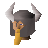
| Config name | gunthor_the_brave |
| NPC id | 199 |
| Combat level | 29 |
| Hitpoints | 35 |
| Attack / Strength / Defence | 22 / 22 / 25 |
| Respawn | 100 ticks |
| Options | Talk-to, Attack |
| Wander range | 5 tiles from spawn |
| Max range | 7 tiles from spawn |
| Defined in | scripts/_unpack/225/all.npc |
| Bonuses | Attack bonus 8, Strength bonus 13, Stab def 12, Slash def 14, Crush def 10, Magic def -1, Range def 11 |
Gunthor the brave
A mighty warrior!
Show all 1 spawn on the world map → Open in knowledge graph →
Drops
Drop script: scripts/drop tables/scripts/barbarian.rs2 (specific handler)
Drop table
| Item | Quantity | Rarity | Notes |
|---|---|---|---|
| 8 | 21/64 (32.81%) | ||
| 12 | 9/128 (7.03%) | ||
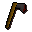 Iron axe | 1 | 3/64 (4.69%) | |
| 25 | 5/128 (3.91%) | ||
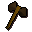 Bronze battleaxe | 1 | 1/32 (3.12%) | |
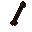 Bronze arrow | 10 | 1/32 (3.12%) | |
| 3 | 1/32 (3.12%) | ||
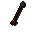 Iron arrow | 8 | 3/128 (2.34%) | |
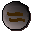 Earth rune | 5 | 3/128 (2.34%) | |
| 32 | 3/128 (2.34%) | ||
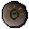 Mind rune | 10 | 1/64 (1.56%) | |
| 8 | 1/64 (1.56%) | ||
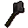 Iron mace | 1 | 1/128 (0.78%) | |
| 2 | 1/128 (0.78%) | ||
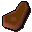 Cooked meat | 1 | 1/128 (0.78%) | |
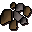 Tin ore | 1 | 1/128 (0.78%) | |
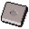 Amulet mould | 1 | 1/128 (0.78%) | |
| Beer | 1 | 1/128 (0.78%) | |
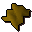 Fur | 1 | 1/128 (0.78%) | |
| 1 | 1/128 (0.78%) | ||
| Gem drop table table | see table | 1/128 (0.78%) |
Tertiary drops
| Item | Quantity | Rarity | Notes |
|---|---|---|---|
| Clue scroll (easy) | 1 | 1/128 (0.78%) | members |
Locations
| Area | Coordinates | Level | Count | Map |
|---|---|---|---|---|
| Monastery | 3081, 3444 | 0 | 1 | view |
Dialogue
Gunthor the braveAh, you've come for a fight!
Gunthor the braveWhat do you want?
PlayerWhat are you offering?
Gunthor the braveA fight!
Gunthor the braveYou look funny!
Gunthor the braveWanna fight?
Gunthor the braveGrrr!
Gunthor the braveGo away!
Referenced in scripts
scripts/areas/area_barbarian_village/scripts/gunthor_the_brave.rs2scripts/drop tables/scripts/barbarian.rs2